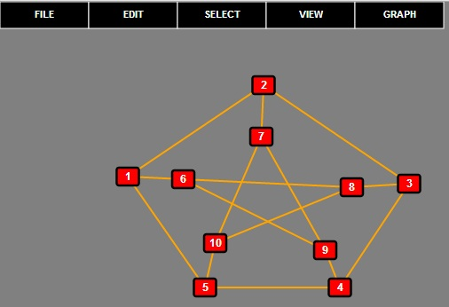
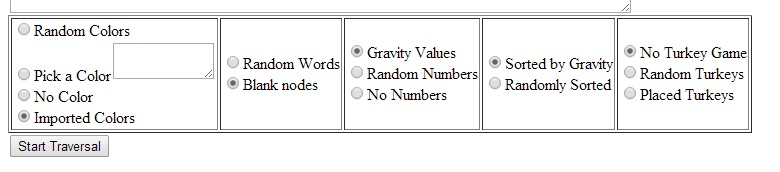
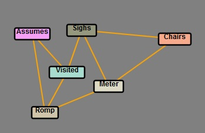
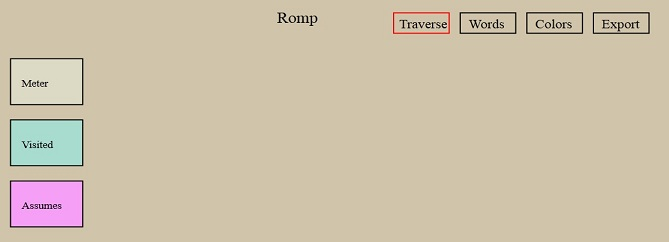
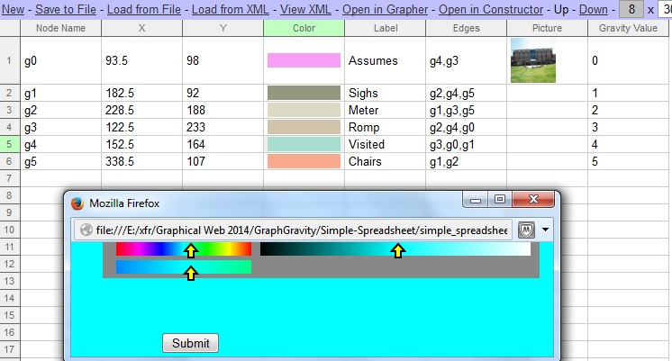
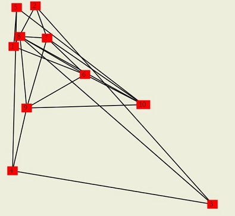
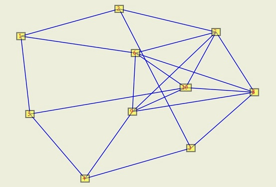

Dr. Deborah Whitfield
Mr. Nicholas Botzer
Mr. Zachary Petrusch
Dr. David Dailey
Mr. Grant Denmeand
Mr. Tyler Bassett
Slippery Rock University
Site development is haphazard at best - some start by designing a page, others add pages to existing sites.
Rarely is the navigability of the site considered. We have created a tool
using SVG for the rapid prototyping of web site structures.
The tool permits the user to design a web site by either a graph or via a
spreadsheet. The user can create a graph that represents the connectivity of
the web site and then export the structure to a skeleton website or import the
structure into a spreadsheet. Or the user can create the web pages completely
in the spreadsheet by specifying links, colors, images, and text for each page.
Then the rapid prototype generates a test site for the user to walk through and
see the structure. Researchers may then test the navigability of the site as a
function of various properties of connectivity.
The tool uses SVG, XML and simple spreadsheet
(http://www.simple-groupware.de/cms/spreadsheet/home -
an open-source spreadsheet software for use in browsers).
It is built on Grapher (as previously presented at SVG Open 2009).
Grapher is used to create graphs for page interconnections and generates
XML code that can be input into the spreadsheet so that the designer can add data to pages.
This work also includes force-directed layout of the graphs to help visualize
both the connectivity and visitors' traffic in graphs. Central to much of the
design has been the use of graph theoretic metaphors for navigability, namely
graph gravity, landmarks and vantage points. Previous work has shown that graph
gravity can be used to facilitate users' navigation of the connective structure of a web site.
Grapher is a tool that can be used to design and test different types of Graphs. This tool is extremely useful for someone who is interested in studying Graph Theory. Grapher was originally developed in 1987 and ported to SVG in 2009. The new version of Grapher is written with HTML,javascript, and SVG. Grapher mainly uses javascript for handling various functions that can be performed on the graph. A few of the features that Grapher offers to the end user are graph scaling, graph compliment, and extruding.
The SRU Virtual Gravity Group has used Grapher for many different functions of research. The first utility is has been used for is researching which types of graphs are easy to navigate. To test these various graphs they can be looked at as websites that people can then navigate. A graph can be seen as a website in that every node is a webpage and every edge is a link to another page. By looking at a graph in this way Grapher can then be used for Optimization of web site design to ease an indivduals navigation.

Figure 1. Peterson Graph created in Grapher
Demonstration of grapher
The Website Constructor was a tool developed by the Virtual Gravity Group in 2013 that allows for the creation of a prototype website based on a given graph structure. A key point to keep in mind about the constructor is that it's purpose is not to be a web page deisgn tool but instead be a web site layout tool. The Constructor creates each website by taking every node of the given graph and making a web page for it. Each of these pages will be given a background color and a word to correspond with it that gets displayed at the top. The construcotr then displays all of the edges from that given node in the webpage by creating buttons that link to other pages. Each of these buttons color and word on it reflect the color of that webpage and it's given word. This allows someone navigating through one of these webpages to identify different pages and the connections that each one has.
The Construcotr allows for a user to select a variety of choices for how their website will be displayed. The first is how the various colors will show up for each page. The user can select random colors, pick a color which gives every page the same color, no colors, or Imported Colors which takes the nodes colors. Another editable option is whether the pages will have words and numbers associated with them which can be changed. The last feature of constructor is that it allows for various games to be played on these websites. The first game is simple and requires a user to visit all of the pages and then return home to succedd. The second game has the user find an object(e.g. turkey) and bring it back to the starting location. Once all of the objects have been collected the user is done playing. The ultimate goal of these games is to see how long it takes to finish them so we can determine ease of site navigation.

Figure 2. Constructor Options
Constructor
Grapher and Constructor are two tools that work well together for generating websites. Both tools have the same XML structure for Graphs which allows for easy communication between the two. Grapher and Constructor both allow for a user to export the XML data as well as import it back into the tool or into each other for use. This is especially useful once you have created your website in construcotr if you wish to see an overhead layout of it in grapher with the given colors and random words. Also all of the data is maintainted even if it's not visible in that tool. For instance Constructor doesn't use the x and y values but still stores them so when you expor the XML from constructor it's not lost.
Figure 3. Peterson Graph created in XML of labeled Peterson graph
The previous peterson graph that has been labeled with words from the XML above in Figure 3,
can be seen in Figure 4
Figure 4. Labeled Peterson Graph Viewed in Grapher
Demonstration of Constructor on Peterson Graph
A simpler graph will be used for further explanations
| 
|

|
|
Figure 5. Simple Graph
|
Figure 6. Simple Graph in Constructor
|
Demonstration of
Grapher,
Constructor
and traversal
The representation of a website in a spreadsheet format is not intuitive. However, representing a site in such a way can have major advantages when it comes to
viewing the overall structure of the site and the contents of each page. For the representation to work every row on the spreadsheet represents a page on the website, or a node on a graph. The columns of the spreadsheet represent various attributes that a page can contain. These attributes include things like page name, edges or links to other pages, color of the page, and page content such as images.
An open source project was used and adapted by the Slippery Rock University Virtual Gravity Group in order to meet the needs of the project. The original project was created by Simple Groupware and mostly functioned as a free, open-source alternative to a spreadsheet program like Excel, but browser based. In order to adapt the program for use within the Virtual Gravity Group a few things needed changed. Mainly the program needed to be able to interact and communicate with the pre-existing softwares created by the group; Grapher and Constructor. For this to occur the spreadsheet needed to be edited to create and accept Graph XML. The program also needed to perform some graph and website specific tasks, such as automatically removing edges to deleted rows.
| 
|
|
|
Figure 7. Spreadsheet View of Simple Graph
|
Figure 5. Simple Graph
|
Spreadsheet Demonstration
- Constructor and Spreadsheet use the same XML structures
- Constructor generates a web site protoype with additional page information
imported from constructor
- Page design is not part of the project
- Properties of the page imported from Spreadsheet provide conceptual idea for a prototype of web site
A demonstration of the symbiotic relationship between Grapher, the constructor,
and the spreadsheet application shows that the underlying
XML structure permits seamless movement amongst the three while maintaining any XML structures
that the tool may not use.
The current project has many improvements that can be made and are already planned for.
One of the additions will be to make the images that can be added in spreadsheet visible in Grapher.
When the image shows up in Graph it will be a thumbnail version of it but will allow the user to see what the website will have much better once it's in the constructor. Another improvement that will be made is adding other games to the constructor to be used for testing. Along with this the improvements are looking to be made into how constructor lays out the webpages.
The Virtual Gravity Group is also looking to add some new functionalities into Grapher for data
visualizations. A Force-directed layout that had been in older versions of Grapher will be
re-implemented. In addition a tool will be added that will allow users to observe how people
walked through various graphs that were used for navigation testing. Some features for this
visualization will be illustrating the nodes visited frequently as well as which edges are
traveled the most.
Using force directed layout on Figure 8, produces Figure 9.
| 
|

|
|
Figure 8. Confused Peterson Graph
|
Figure 9. Peterson Graph after Force Directed Layout
|
(1): A Browser-based Graphical User Interface for Designing and Manipulating Graphs. David Dailey, Eric Elder, Reno Perri. 7th Annual Conference, SVGOpen .W3C and SVG Working Group Fall 2009 at Google, Inc.
https://www.svgopen.org/2009/papers/42-Grapher__an_open_source_SVGbased_web_application_for_graph_theorists/
(2) A non-Euclidean Distance. Stanley R. Clemens. The Mathematics Teacher, v. 64, No 7 (November 1971) pp 595-600. Available at http://www.jstor.org/discover/10.2307/27958625?uid=3739864&uid=2129&uid=2&uid=70&uid=4&uid=3739256&sid=21101160785097
(3) http://www.cs.mcgill.ca/~jsatta/pr644/freeman/mmetric.html
(4) Graph Theory by Frank Harary, publ. Addison Wesley, 1970.
(5) Graphs: basic definitions. David Dailey, 2000, http://srufaculty.sru.edu/david.dailey/graphs/graphs.htm